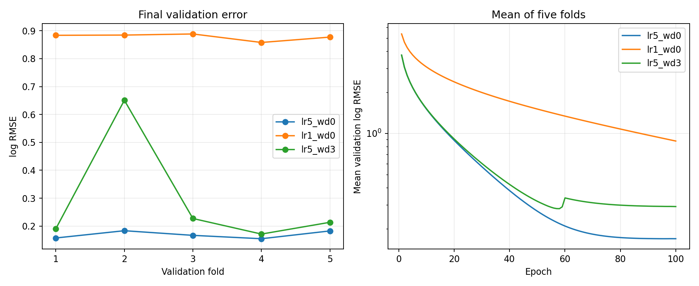

前几周主要在复现模型的数学计算，本周继续《动手学深度学习》第5章，开始整理模型在框架里怎样组织：层如何注册，参数怎样访问和共享，模型如何保存，以及输入与模型怎样迁移到GPU。同时继续上周的房价案例，把预处理改成只在每折训练部分拟合，再对比三组参数。
这篇复盘主要记录
- 模型构造、参数注册和共享参数
- 延后初始化与自定义层的梯度
- 模型读写、固定buffer和设备迁移
- 房价逐折预处理与三组参数的实际比较
一、模型不仅是一条前向公式
一个模型既要说明怎样计算输出，也要让框架找到可训练参数。简单网络可以直接写成nn.Sequential；需要控制流、多个输入或复杂组合时，可以继承nn.Module并定义forward。
class MLP(nn.Module):
def __init__(self):
super().__init__()
self.hidden = nn.Linear(20, 256)
self.output = nn.Linear(256, 10)
def forward(self, inputs):
return self.output(F.relu(self.hidden(inputs)))本周复现了顺序模型、自定义MLP、自定义容器、带控制流的模型和嵌套模型。前三种示例都将形状为(2,20)的输入变成(2,10)的输出，但随机初始化不同，不能因此说它们的输出数值相同。测试另外用相同层参数确认自定义容器与Sequential的计算一致。
自定义容器使用公开的add_module注册层，再按顺序调用子层。这样框架能发现7946个参数，优化器、保存函数和设备迁移也能沿着模型结构工作。
二、参数访问与共享
参数的值、形状和梯度是不同的信息。named_parameters()给出参数名及参数本身；反向传播前梯度通常为None，执行反向传播后才有本轮累积的梯度。嵌套模型的名字则体现层级关系。
共享参数需要复用同一个层对象。两个层的权重恰好相等，只能说明当时的数值一样，并不意味着后续更新会同步。
shared = nn.Linear(8, 8)
model = nn.Sequential(
nn.Linear(4, 8), nn.ReLU(),
shared, nn.ReLU(), shared, nn.ReLU(), nn.Linear(8, 1)
)
assert model[2].weight is model[4].weight本次手动修改一个位置的共享权重，另一位置立即读到相同变化。初始化练习则包括正态、常数、Xavier和书中的自定义稀疏初始化；手动修改参数时使用torch.no_grad()，不通过.data操作。
三、延后初始化让形状在第一次输入时确定
本地教材的5.3没有PyTorch代码，我补充了现代PyTorch的LazyLinear示例。它允许先指定输出宽度，在第一次前向计算时根据输入推断输入宽度。
model = nn.Sequential(
nn.LazyLinear(256), nn.ReLU(), nn.LazyLinear(10)
)
outputs = model(torch.rand(2, 20))
print(model[0].weight.shape) # (256, 20)
print(model[2].weight.shape) # (10, 256)第一次前向之前，权重是尚未确定形状的参数；之后输入宽度固定为20，并不会在每次输入时自动适应不同宽度。自定义初始化可以在参数形状确定后执行。这个示例帮助理解概念，大型模型中的初始化顺序与保存恢复还需要继续练习。
四、自定义层需要真正参与训练
无参数的中心化层直接返回输入减去均值。这里沿用书中的定义，减去整个张量的均值，而不是每个样本各自的均值。对[1,2,3,4,5]得到的结果是[−2,−1,0,1,2]。
带参数的层需要把权重和偏置注册成nn.Parameter，并在前向计算中直接使用它们：
class MyLinear(nn.Module):
def __init__(self, in_units, units):
super().__init__()
self.weight = nn.Parameter(torch.randn(in_units, units))
self.bias = nn.Parameter(torch.randn(units))
def forward(self, inputs):
return F.relu(inputs @ self.weight + self.bias)这次适配没有照抄教材示例中前向计算的weight.data和bias.data，而是直接使用Parameter，让自动求导保留参数依赖。示例实际执行反向传播和优化器更新，权重梯度范数约2.431，更新后的参数确实变化。
测试还将它与同权重的Linear加ReLU比较，确认输出、权重梯度和偏置梯度一致。只看到前向结果形状正确，不足以确认自定义层能够训练。
五、Parameter、buffer和普通张量
书中的FixedHiddenMLP包含一个不需要训练的随机矩阵。本次将它注册成buffer，使其跟随模型保存和迁移设备，同时不会被优化器当作可训练参数。
| 存储方式 | 进入parameters | 进入state_dict | 随model.to迁移 |
|---|---|---|---|
| nn.Parameter | 是；是否求导取决于requires_grad | 是 | 是 |
| 持久buffer | 否 | 是 | 是 |
| 普通张量属性 | 否 | 默认否 | 默认否 |
self.register_buffer("rand_weight", torch.rand(20, 20))buffer还可以设为不持久，此时不进入state_dict；本周使用默认的持久buffer。这个区别直接影响模型恢复和GPU迁移，不只是命名上的分类。
六、保存模型与恢复预测
5.5练习了张量、张量列表、字典和模型参数的读写。模型采用state_dict方式保存；恢复时先创建相同结构，再载入参数，最后切换到评估模式。
torch.save(model.state_dict(), path)
clone = MLP()
clone.load_state_dict(torch.load(
path, weights_only=True, map_location="cpu"
))
clone.eval()本次MLP有7946个可训练参数，对同一份输入恢复前后的预测最大误差为0。state_dict不是模型结构说明书，也不是完整的训练进度；如果要断点续训，还需要考虑优化器状态、训练轮数和随机状态等信息。本周完成的是参数往返恢复与预测验证。
七、模型和输入必须放在同一设备
本机检测到一块NVIDIA GeForce RTX 4060 Laptop GPU。示例先在CPU计算，再将模型和相同输入迁移到cuda:0，比较结果；另一个包含固定buffer的模型也完成了设备迁移。
device = try_gpu()
model = model.to(device)
outputs = model(inputs.to(device))本次数值示例中CPU和CUDA输出最大误差为0，但这不代表不同设备和算法永远逐位一致。代码用容差进行结果比较。没有可用GPU时回退CPU，也不执行书中需要第二块GPU的cuda:1操作。
八、房价预处理只在每折训练部分拟合
上周的房价复盘记录了教材联合预处理的限制。本周把每一折的数据处理拆成fit和transform：训练部分确定数值均值、标准差、类别词表和最终特征列，再将相同规则应用到验证部分。
preprocessor = HousePreprocessor().fit(train_features)
train_x = preprocessor.transform(train_features)
valid_x = preprocessor.transform(valid_features)验证中的新类别不用于扩展训练词表，而是在本次实现中映射为类别缺失指示列；数值缺失、常量列和全空数值列得到明确处理。自动测试用验证集极大值和新增类别确认：它们不会改变训练均值、训练特征和编码列。
这次不使用官方测试数据的特征来拟合预处理。由于每折只看到自己的训练数据，编码维度可能随折变化，不能再假定每折都固定为上周联合编码的331维。
九、三组参数的真实结果
仍使用书中的线性基线、原始价格MSE训练目标和Adam，批量64、连续5折、每折100轮。各折种子固定为42至46；三组设置使用相同折划分和对应种子，便于比较。
| 学习率 | 权重衰减 | 平均训练log RMSE | 平均验证log RMSE |
|---|---|---|---|
| 5 | 0 | 0.164566 | 0.168952 |
| 1 | 0 | 0.878266 | 0.878484 |
| 5 | 3 | 0.336672 | 0.290695 |

本次学习率5、权重衰减0的平均验证log RMSE最低，约0.1690。学习率降到1后，训练误差和验证误差都约0.878；在相同100轮预算下，这与优化尚不充分相符，不能据此说小学习率普遍不好。
权重衰减设为3也没有改善结果，平均验证误差约0.2907，第二折达到约0.6510。这需要继续分析参数尺度、收敛过程和折间差异。上周多项式或高维小样本任务里的有效参数，不能直接假定对这里也有效。
十、本周验证与下一步
8项自动测试覆盖自定义容器、自定义层输出与梯度、中心化层梯度、共享参数、LazyLinear、buffer保存、模型恢复和预处理统计量隔离。8个示例也分别运行成功，实验记录和图表保存在第十四周代码目录。
目前对模型组织和参数管理更清楚，但复杂共享结构、延后初始化后的管理，以及调参中的优化与泛化分析还需要继续实践。下周开始第6章卷积神经网络，练习互相关、填充、步幅、多通道和池化，再复现LeNet图像分类。
模型组织参数共享自定义层设备迁移验证隔离